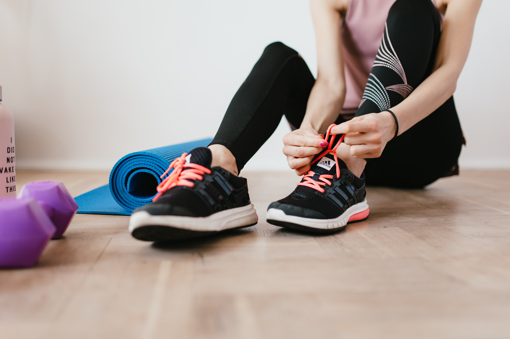
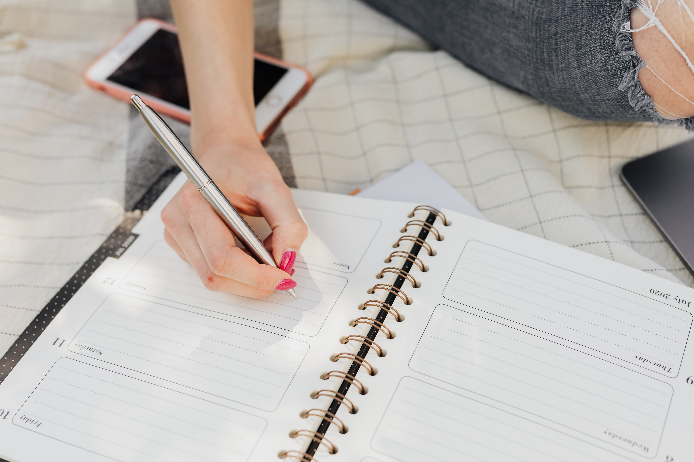

One thing I found that is so easy to forget to incorporate into our daily routines is some form of exercise. At the beginning of last year (at the start of covid), I found it difficult to find motivation to fit in a workout, especially with most gyms closed at the time. I got in the habit of not adding any workout to my daily routine. Eventually, I found that this began affecting my overall productivity and energy as well. That's when I realized how important it was to find some way to stay active, even when you don't feel like doing it.
There are so many ways you can stay active and get in some exercise; it doesn't have to mean getting a gym membership or doing intense daily workouts. Staying active can be as simple as dedicating some time each day for a walk or run to just get some fresh air, or following along with an at-home workout at your own pace. Eventually, after doing small amounts of exercise each day, it will start to become a habit. Making more healthy habits can start to improve your overall motivation to workout more or, at the very least, make you feel healthier and happier!
